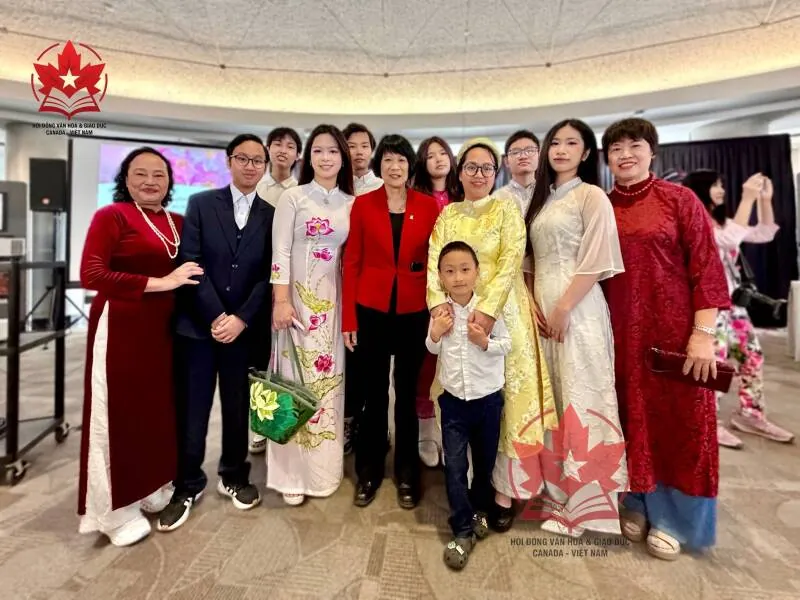

TORONTO, May 10, 2026 — Canada Vietnam Cultural & Educational Council (CVCEC) founder and president Phan Thi Quynh Trang and members of the Viet Youth Readiness Hub (VYRH) joined community leaders at the official opening ceremony of Asian Heritage Month 2026 at Toronto’s Metro Hall.
Keynote speaker Justin Poy spoke about the influence of Asian culture on Canadian consumer trends and the arts, and reflected on the struggles and achievements of early Asian Canadian pioneers.
CVCEC representatives also met former senator Vivienne Poy and Toronto Mayor Olivia Chow, who congratulated the group during the ceremony.
CVCEC members wore traditional Vietnamese five-panel gowns, known as ao ngu than, by designer Quang Hoa. The organization thanked the designer for the gowns.
CVCEC said it sees cultural identity as a foundation for the future and young Asian Canadians as cultural ambassadors who can build understanding between communities. It invited the public to join its Asian Heritage Month activities throughout May.



About CVCEC
The Canada Vietnam Cultural & Educational Council (CVCEC) is a federally incorporated not-for-profit organization based in Toronto. It offers Vietnamese language and culture classes for children, helps newcomer and international students settle into Canadian schools and connects education communities in Canada and Vietnam. More information is available at cvcec.org.
About the Viet Youth Readiness Hub
Launched in Toronto in April 2026, the Viet Youth Readiness Hub (VYRH) is a CVCEC initiative that helps Vietnamese students and families understand Canadian schools through orientation sessions, mentoring and youth leadership opportunities.
-30-
Media contact
Phan Thi Quynh Trang, founder and president
Canada Vietnam Cultural & Educational Council
contact@cvcec.org